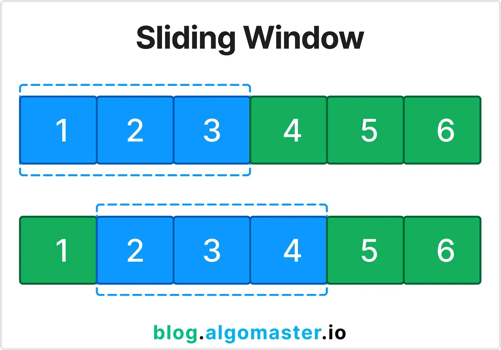

Sliding Window — техника поиска подмассива или подстроки, удовлетворяющей условию, с оптимизацией времени за счёт поддержания окна элементов.
Когда использовать?
Когда задача связана с непрерывными подмассивами или подстроками.
Пример задачи
Вход: nums = [2, 1, 5, 1, 3, 2], k = 3 Выход: 9
Объяснение

Sliding Window — это техника, при которой поддерживается подмассив (или подстрока) фиксированной или переменной длины, который "скользит" по исходному массиву.
Вместо пересчёта суммы или других характеристик для каждого окна с нуля, мы обновляем их, добавляя новый элемент и убирая старый.
Это позволяет решать задачи за O(n), а не O(n*k), где k — размер окна.
Окно может быть фиксированного размера (например, максимальная сумма k подряд идущих элементов) или изменяемого (например, минимальная длина подмассива с суммой не меньше target).
Sliding Window часто используется для поиска максимума/минимума, уникальных символов, подстрок с определёнными свойствами и др.
Пример: задача "Longest Substring Without Repeating Characters" — окно расширяется, пока символы уникальны, и сужается при повторе.
Техника применима и к строкам, и к массивам, и к двумерным матрицам (2D sliding window).
Swift пример
func maxSum(_ nums: [Int], _ k: Int) -> Int {
var maxSum = 0
for i in 0...nums.count - k {
var sum = 0
for j in i..<i+k {
sum += nums[j]
}
maxSum = max(maxSum, sum)
}
return maxSum
}
let nums = [2, 1, 5, 1, 3, 2]
let result = maxSum(nums, 3) // 9